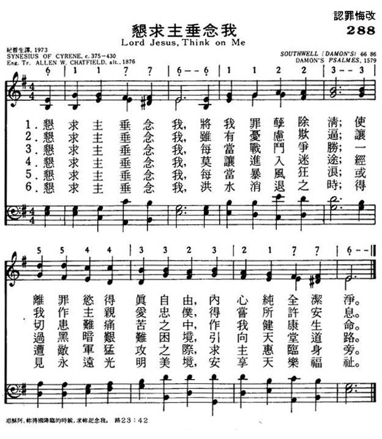

| 簡介
Lord Jesus,
Think on Me |
| This text is among the oldest hymns in
this book; its original Greek version dates from around the beginning of
the 5th century. The stanzas used here come from a 19th-century
paraphrase, whose simplicity and directness are well complemented by a
16th-century psalm tune. |
|
|
|
|
1 Lord Jesus, think on me,
and purge away my sin;
from earth-born passions set me free,
and make me pure within.
2 Lord Jesus, think on me,
with care and woe oppressed,
let me Thy loving servant be,
and taste Thy promised rest.
3 Lord Jesus, think on me,
nor let me go astray;
through darkness and perplexity
point Thou the heav'nly way.
4 Lord Jesus, think on me,
that, when the flood is past,
I may eternal brightness see,
and share Thy joy at last.
Source: Hymns
to the Living God #85
|
288恳求主垂念我
1.恳求主垂念我，将我罪孽除清，
使离罪欲得真自由，内心纯全洁净。
2.恳求主垂念我，虽有忧虑欺逼；
让我作主亲爱忠仆，得尝所应许安息。
3.恳求主垂念我，每当战斗争胜；
一切患难痛苦之中，作我健康生命。
4.恳求主垂念我，莫让进入迷途；
经过黑暗艰难困境，引向天堂道路。
5.恳求主垂念我，每当暴风狂浪；
或遭敌军猛攻之际，求主惠临身旁。
6.恳求主垂念我，洪水消退之时；
得见永远光明美境，安享天乐福祉。
|
|
https://www.mred365.cn/szxg/7291.html

|
|
|
|
-

- Lord Jesus, Think on Me (Tune: Southwell - 6vv)
求主垂念歌
Lord Jesus Think on Me
求主垂念歌
Lord Jesus Think on Me
作者：古利奈·辛尼修Synesius of Cyrene(375-430)，杨荫浏译，普天颂讚(1977), 152。
求主垂念贯穿六节，求主垂念即求主怜悯。认罪的礼序，重点不在盘点所犯罪过，更在上主面前，坦承在诸般试探面前，生命的脆弱。
辛尼修文武双全，喜爱运动和天伦之乐，为多利买(Ptolemais) 主教。
六节诗词有不同的主题：罪——忧虑——战斗——迷途——敌军猛攻——洪水。
1
恳求耶稣垂念，将我罪孽洗清，
使我脱离世间情欲，使我心内洁淨。
2
恳求耶稣垂念，怜我多忧多患，
让我为主忠爱僕人，得享应许平安。
3
恳求耶稣垂念，怜我身陷战阵，
虽在万般忧患之中，保我健康生命。
4
恳求耶稣垂念，禁我离主孤行，
在此黑暗迷惑之中，指引登天路程。
5
恳求耶稣垂念，狂风骇浪可惊，
敌人在前猛攻之时，恳求与我亲近。
6
恳求耶稣垂念，待到洪波既落，
但愿看见永�琤�明，永享无穷喜乐。
首节攻击来自内心情欲之纷扰，二节多忧多患来自外在之横逆，三节人生如战场，诸般压力摧我身，求主保守健康，四节陷在迷惑岐路求指引，五节敌人猛攻，仇敌以死亡威吓，若上主亲近不用惧怕，六节洪波既落，经过死荫之幽谷，自是芳草处处的永��乐园。
诗歌透过层层试探，步步惊吓，呈现人性的脆弱。从内心情欲到外在的横逆，从生活的压力到迷惑岐路，直至人生终末死亡的威吓，都是不能承受生命的重，求上主垂念。
求主垂念歌作者以攻击的视角，诠释信徒在朝圣的征途上，遇到的重重试探，背后因为有一位仇敌——撒但。哥顿·麦当奴(Gordon
MacDonald)，前美国学生团契总干事，其畅销书《心意更新》(Ordering Your Private
World)为美国教牧推荐的十大灵修好书，在神学院我修读，后来我教授教牧学时，都是要写读书报告的必读书。作者灵力充沛，恩赐华茂，工作量愈来愈大。在心灵疲惫孤单时，受情欲诱惑跌倒，但他坦承犯罪，经友好同工辅导扶持后重新上路，写了《重建你破碎的世界》(Rebuild
Your Broken World)，可惜此书目前还没有中译。
这书有一章以攻击的视角论述试探。人犯罪就像昆虫进入蜘蛛布下的网罗，被捕猎不能动弹，坐以待毙。但一个房间之可以被蜘蛛结网，由来有自。此房间一定没有打扫很久了，门窗紧闭，空气不流通，满布尘埃，房间的温度和湿度刚好，让蜘蛛寄寓其中，挂网其上。最后我们发现，，等候昆虫堕入其网罗。
人犯罪不是偶然的，当然受试探的人，因为对自己灵性的轻忽，没有常拂拭，让心灵满布尘埃，让蜘蛛飞进来结网，让试探有机可乘；更重要的是撒但的布局，伺机用种种方法攻击我们。撒但是有情格的主体，天空掌权的恶魔。彼得说：「务要谨守，儆醒。因为你们的仇敌魔鬼，如同吼叫的狮子，遍地游行，寻找可吞吃的人。」(彼前五8)
"Lord Jesus, Think on Me" was written by Synesius of Cyrene, the reluctant
Bishop of Ptolemais in the early fifth century.
It was translated by Rev Allen William Chatfield, published in 1876.
The tune is 'Southwell', written by William Daman, a recorder player in the
court of Elizabeth I in 1579. He was probably born Gulielmo (or Gulielmus)
Damano in Lucca in Italy.
|
Short Name: |
Synesius of Cyrene, Bishop of Ptolemais |
|
Full Name: |
Synesius, of Cyrene, Bishop of Ptolemais |
|
Birth Year
(est.): |
370 |
|
Death Year
(est.): |
430 |
Synesius,

a native of Cyrene, born
circa 375. His descent was illustrious. His pedigree extended through
seventeen centuries, and in the words of Gibbon, "could not be equalled in
the history of mankind." He became distinguished for his eloquence and
philosophy, and as a statesman and patriot he took a noble stand. When the
Goths were threatening his country he went to the court of Arcadius, and for
three years tried to rouse it to the dangers that were coming on the empire.
But Gibbon says, ”The court of Arcadius indulged the zeal, applauded the
eloquence, and neglected the advice of Synesius." In 410 he was made Bishop
of Ptolemaïs, but much against his will. He died in 430. Synesius's opinions
have been variously estimated. That he was imbued with the Neo-Platonic
philosophy there is no doubt but that he was a semi-Christian, as alleged by
Mosheim or that he denied the doctrine of the Resurrection as stated
directly by Gibbon [see Decline and Fall, vol. ii.];
and indirectly by Bingham [see Christian Antiq.,
Lond., 1843, i., pp. 464-5] is very doubtful. Mr. Chatfield, who has
translated his Odes in his Songs and Hymns of the Greek
Christian Poets, 1876, contends that his tenth Ode "Lord
Jesus, think on me," proves that he was not a semi-Christian, and that he
held the doctrine of the Resurrection. The first is clear: but the second is
open to doubt. He certainly prays to the Redeemer: but there is nothing in
the hymn to shew that he looked upon the Redeemer as being clothed in His
risen body. This tenth ode is the only Ode of Synesius,
which has come into common use. The original Odes are
found in the Anth. Graeca Carm. Christ, 1871, p. 2
seq., and Mr. Chatfield's trs. in his Songs, &c, 1876.
Synesius's Odes have also been
translation by Alan Stevenson, and included in his The Ten
Hymns of Synesius, Bishop of Tyreore, A.D. 410 in English Verse. And some
Occasional Pieces by Alan Stevenson, LL.B. Printed for Private
Circulation, 1865.
-- Excerpts from John
Julian, Dictionary of Hymnology (1907)
|
Short Name: |
Allen William Chatfield |
|
Full Name: |
Chatfield, Allen William, 1808-1896 |
|
Birth Year: |
1808 |
|
Death Year: |
1896 |
Chatfield, Allen
William, M.A., born at Chatteris, Oct. 2nd, 1808, and educated at
Charterhouse School and Trinity College, Cambridge, where he was Bell's
Univ. Scholar and Members' Prizeman. He graduated in 1831, taking a first
class in classical honours. Taking Holy Orders in 1832, he was from 1833 to
1847 Vicar of Stotfold, Bedfordshire; and since 1847 Vicar of Much-Marcle,
Herefordshire. Mr. Chatfield has published various Sermons from
time to time. His Litany, &c. [Prayer
Book] in Greek verse is admirable, and has been commended by many eminent
scholars. His Songs and Hymns of Earliest Greek Christian
Poets, Bishops, and others, translated into English Verse, 1876, has
not received the attention of hymnal compilers which it merits. One hymn
therefrom, "Lord Jesu, think on me," is a specimen of others of equal merit,
which might be adopted with advantage. He died Jan. 10, 1896.
-- John Julian, Dictionary
of Hymnology (1907)
Tune Information
|
Title: |
SOUTHWELL (Daman) |
|
Composer: |
William Daman (1579) |
|
Meter: |
6.6.8.6 |
|
Incipit: |
13322 11334 45577 |
|
Key: |
e
minor |
|
Source: |
Denham's Psalter |
|
Copyright: |
Public Domain |
|
Short Name: |
William Daman |
|
Full Name: |
Daman, William, ca. 1540-1591 |
|
Birth Year: |
1540 |
|
Death Year: |
1591 |
Aliases: Damon; Damano;
Demaunde; Damond; Dymond
Born: ca.1540
Died: 1591
Damon was a foreign
composer resident in England. He arrived probably in England in 1566 as a
servant of Sir Thomas Sackville. In 1576 he became a recorder player at the
Court of Elizabeth I.
He was described as having
been born in "Luke" and "Lewklande" and, on the assumption that these names
refer to Luik or Liège, it has been inferred that he was a Walloon. However
contemporary London records describe him as an Italian and a later reference
refers to him having been born in "Luke in Italy", i.e. Lucca. His
unanglicised name may have been Gulielmo (or Gulielmus) Damano.
Daman died from the
effects of an ulcer and was buried at St Peter-le-Poer, London, on 26 March
1591.
List of choral works:
Beati omnes qui timent Dominum
Confitebor tibi Domine
Miserere nostri Domine
Omnis caro gramen sit
Praedicabo laudes tuae Domine
Spem in alium
Publications:
The Psalmes of David in English Metre (1579)
The Former Booke of Musicke of M. William Damon (1591)
The Second Booke of Musicke of M. William Damon (1591)
--www3.cpdl.org/wiki/index.php/
Notes
Lord Jesu, think
on me, p. 760, ii. In Church Hymns, 1903, the
cento is composed of Mr. Chatfield's original translations, stanzas
ii.,iii.,v.,vi.,vii. and ix., as slightly altered in Thring's Collection,
1882; and in the 1904 ed. of Hymns Ancient & Modern.
the stanzas from the original translation are ii., iii., v., vii., unaltered
except that the opening words read "Lord Jesus," &c.
--John Julian, Dictionary
of Hymnology, New Supplement (1907)
LX1867 Lord
Jesus, Think On Me 288恳求主垂念我
初期教会受犹太教影响，着重教导律法和先知的讲论，因此发展出以诵经方式来加强记忆的圣咏。它是一种以经文为内容，不讲究押韵和工整的音律，曲调简朴而庄重，只有单音而无乐器伴奏。主前300年，马其顿帝国征服了整个希腊，希腊语成为地中海地区的通用语言。教会除了唱希伯来诗篇，也开始创作非经文诗歌，如：散文诗、古希腊诗体和祷告文。圣诗受希腊文化影响，着重理性和客观的思维，以真理来对抗异端。当代著名的诗人有：
1. 被称为「基督教神学之父」的亚历山太神学院院长革利免(Clement
of Alexandria, 150-216)。他精通异教文学、希腊哲学和基督教义，他发展基督教柏拉图哲学，是首位以韵律写圣诗的作家。他写了一首以21个不同词称呼基督的诗歌，并鼓励崇拜唱诗。
2. 叙利亚的以法联(Ephraim
of Syria,306-373)是当代著名的希腊圣诗作者和神学家，他写了许多反击异端邪说和阐明正确道理的圣诗，也著作圣经注释书。他组织和训练诗班，也鼓励会众在家唱颂圣诗。以法联的诗歌今已失传，但他竭力维护真理的精神却为后人所记念。
3. 昔兰的辛尼修(Synesius
of Cyrene, 373-414)是一位哲学神学家，于410年出任利比亚主教。他擅长写具「新柏拉图哲学」特征的祷告诗，一生创作了10首圣诗，《求主垂怜歌》是其一。
4. 克里特大主教安德烈(Andrew
of Crete, 650-740)，曾在马撒巴和犹太沙漠修道院修过道，是第8世纪著名的神学家、布道家和希腊圣诗作家。他最著名的作品是以250个诗节写成的《大崇拜乐章》，内容按旧约到新约的年代顺序排列，常用于大斋节期。
5. 大马色的约翰(John
of Damascus,676-749)被称为希腊教会最伟大的诗人。他在马撒巴修道院致力于科学、哲学和神学的研究。他最大的贡献是在音乐和圣诗方面，他是当代东方圣乐最杰出的人物。他写的《复活良辰》被誉为「崇拜乐章金曲」。「参普天颂赞：266」
"LORD JESUS, THINK ON ME"
"According to Thy mercy remember Thou me…" (Ps. 25.7)
INTRO.:
A hymn which asks the Lord in His mercy to remember us is "Lord Jesus, Think On
Me" (#571 in Hymns
for Worship Revised). The text was written by Synesius of Cyrene, who was
born in Cyrene, North Africa, which is in modern day Libya, around A. D. 375.
Cyrene was the seat of a Greek colony which became a flourishing center of
wealth and learning and home to philosophers, poets, and artists. Its apex of
glory was around 100 B. C. Synesius was descended from a wealthy and illustrious
family which, according to the historian Edward Gibbons, could trace its descent
back seventeen centuries to Spartan Kings. In his youth, he went to Alexandria
and was educated under the celebrated woman Neo-Platonist, Hypatia. As an adult,
he became wealthy and was known as a sportsman, a brilliant philosopher, a
statesman, an eloquent orator, and a man of noble character.
Also, Synesius was a friend of Augustine of Hippo. When invasions by the Goths
were threatening his country, he sought to persuade Emperor Arcadius about the
imminent danger, but without success. After marrying a Christian in 403, he was
converted to Christianity and a few years later was made bishop of Ptolemais by
popular demand in 410. In spite of his dissent from some of the tenets of the
church, his outstanding character alone made him acceptable. Around 410,
Synesius published a series of ten hymns in which he set forth Christian
doctrine. They show the evidences of Semitic influence on classic Greek poetry.
"Lord Jesus, Think On Me" is the last of the ten. After having outlived his
beloved wife and lost all his sons to a plague, he died around A. D. 430 in
Ptolemais, although some authorities give the date as early as 414. The English
translation was made by Allen William Chatfield (1808-1896).
Chatfield, an Anglican minister in England, first published five stanzas in his Songs
and Hymns of the Earliest Greek Christian Poets. Four more stanzas
were added shortly afterwards, and the nine stanzas appeared later that year in
his Collected
Psalms and Hymns. The song became well known as a result of being used in Hymns
Ancient and Modern. Usually the words are set to a minor tune (Damon,
Southwell, or Northern Tune) that first appeared in The
Psalms of David in English Meter of 1579
published by William Damon (c. 1540-c. 1590). For those who do not care for
lugubrious minor melodies, the hymn can be sung to any short meter tune. I
prefer one (Dulce Domum) composed in 1876 by an Englishman who emigrated to
Canada, Robert Steele Ambrose (1824-1908). It is used in Hymns
for Worship Revised with "One Sweetly Solemn Thought" (#625).
Among hymnbooks published by members of the Lord’s church during the twentieth
century for use in churches of Christ, the hymn is found in the 1986 Great
Songs Revised edited by Forrest M. McCann; and the 1992 Praise
for the Lord edited by John P. Wiegand; in addition to Hymns
for Worship Revised (not in the original edition). According
to Albert Edward Bailey in The
Gospel in Hymns, the song appeared among liturgical denominations in the
1938 Anglican
Hymn Book of Canada, the 1940 Episcopal
Hymnal of the United States, The 1918 United
Lutheran Common Service Book, The 1937 Presbyterian
Hymnal, the 1931 Anglican
Songs of Praise of England, and the 1930 Hymnary
of the United Church of Canada. It was probably introduced to evangelical
denominations in the 1974 Hymns
of the Living Church edited by Donald P. Hustad and published
by Hope Publishing Company.
The song asks for various blessings from the remembrance of the Lord.
I. From stanza 1, we learn that we must seek forgiveness from the Lord
"Lord Jesus, think on me And purge away my sin;
From earth-born passions set me free And make me pure within."
A. The Christian who sins must confess his sin to find forgiveness from the
Lord: 1 Jn. 1.9
B. Then, he must be set free from all earth-born passions by putting to death
his members which are upon the earth: Col. 3.5
C. This is how the Lord will make him pure within: 1 Jn. 3.3
II. From stanza 2, we learn that we must turn to the Lord to find rest from care
and woe
"Lord Jesus, think on me, With care and woe oppressed;
Let me Thy loving servant be And gain Thy promised rest."
A. As long as we live on this earth, we shall be oppressed by care and woe, but
we can cast our cares upon the Lord: 1 Pet. 5.7
B. To do this, we must determine to be His loving servants: Rom. 6.22
C. When we come to Christ and take His yoke of service, He promises rest: Matt.
11.28-30
III. From stanza 3, we learn that we must find help from the Lord in the fight
of faith
"Lord Jesus, think on me, Amid the battle’s strife;
In all my pain and misery Be Thou my health and life."
A. The battle’s strife involves wrestling with the hosts of wickedness in the
heavenly places: Eph. 6.10-12
B. There will always be much pain, misery and hardship as we strive to be good
soldiers of Christ: 2 Tim. 2.3
C. However, Jesus came that we might have life and have it more abundantly: Jn.
10.10
IV. From stanza 4, we learn that we must go to the Lord for guidance to keep
from straying
"Lord Jesus, think on me, Nor let me go astray;
Through darkness and perplexity Point Thou the heavenly way."
A. Because we are fallible, it is possible for us to go astray: 1 Cor. 10.12
B. However, through the darkness and perplexity of this life, God is able to
keep those who obey His will from falling and present them faultless befoe Him:
Jude vs. 24-25
C. Therefore, He always points us to the strait and narrow way that leads to
heaven: Matt. 7.13-14
V. From stanza 5, we learn that that we must look to the Lord for strength
against our enemies
"Lord Jesus, think on me, When flows the tempest high;
When on doth rush the enemy, O Savior, be Thou nigh."
A. The tempest flowing high represents the warfare that we must wage in
Christ’s service: 1 Tim. 1.18
B. The enemy is the devil who goes about as a roaring lion seeking whom he may
devour: 1 Pet. 5.8
C. However, if we draw near to God, He will draw near to us and help us resist
the devil: Jas. 4.7-8
VI. From stanza 6, we learn that we must hold to Jesus in order to receive
eternal joy
"Lord Jesus, think on me, That when the flood is past,
I may th’eternal brightness see And share Thy joy at last."
A. When the flood is past refers to the time when it is appointed to man to
die: Heb. 9.27
B. God wants us to have eternal life, but this life is found only in His Son: 1
Jn. 5.11
C. Those who are faithful to the Son will enter into the joy of the Lord: Matt.
25.21
CONCL.:
Usually, no more than six of the nine stanzas are usually found in hymnbooks
today, but here is the concluding one (in early centuries it was common to end
all hymns with a trinitarian doxology):
"Lord Jesus, think on me That I may sing above
To Father, Spirit, and to Thee The strains of praise and love."
It is generally thought that these were the work of a tired man who had run the
entire gamut of life, tasted its power and its joys, its successes and its
failures, and now looked forward to an uncertain future in which the whole
fabric of his society was disintegrating. Yet he did so with faith in Christ and
hope for the Lord’s blessings. It is amazing how these universal desires,
although expressed 1,500 years ago, make this hymn relevant to every age. I,
too, live in a wicked and untoward generation in which I need to ask, "Lord
Jesus, Think On Me."
https://hymnstudiesblog.wordpress.com/2008/09/13/quotlord-jesus-think-on-mequot/
Words: Synesius of Cyrene (b. circa AD 375; d. 430);
translation by Allen William Chatfield (b. Oct. 2, 1808; d. Jan. 10,
1896)
Music: Damon (also called Southwell),
by William Damon (b. circa 1550; d. 1593)
Links:
Wordwise Hymns
The Cyber Hymnal
Hymnary.org
Note: Synesius of Cyrene was a wealthy man who could trace his
ancestry back to Spartan kings. He was a statesman, a man of noble
character, and a friend of Augustine. Though he is considered a
neo-Platonist, he had a Christian wife, and developed an understanding
of Christian doctrine. He eventually became a bishop in the early
church. His hymn says:
CH-1) Lord Jesus, think on me
And purge away my sin;
From earthborn passions set me free
And make me pure within.
CH-2) Lord Jesus, think on me,
With many a care oppressed;
Let me Thy loving servant be
And taste Thy promised rest.
CH-4) Lord Jesus, think on me
Nor let me go astray;
Through darkness and perplexity
Point Thou the heavenly way.
One of the sad things often associated with old age is
forgetfulness. In its more extreme form, the individual is unable to
identify close family members, or recall even the most significant
experiences of past times. But a faulty memory is not confined to any
one age group. Children can forget to perform assigned chores. Adults
can fail to remember important anniversaries, or the fulfilment of
promises made.
In the Bible, various forms of the word “forget” are found over a
hundred times. And, perhaps because the Lord recognizes this human
failing, forms of the word “remember” can be found more than twice that
many times. One whole book of the Bible has to do with remembering, the
book of Deuteronomy. As the Israelites were preparing to enter the
Promised Land, Moses reminded them of God’s Law, and of their past
experiences in the wilderness.
We can see the value of such a review. Human beings are often
forgetful. But the strange thing is that the Bible also speaks of God
Himself remembering and forgetting. How is that possible? God is
omniscient, He knows everything, from the name and number of all the
stars (Ps. 147:4), to the number of the hairs on our heads (Matt.
10:30). He even knows exactly what will happen in the future (Isa.
46:9-10; Acts 15:18). If God is supremely and eternally all-knowing, how
could He forget?
The answer has to do with something theologians call “phenomenal
language.” Words describing things as they appear to us, but not
necessarily as they are. We use phenomenal language when we talk about
sunrise and sunset. We know that it is the earth that turns beneath the
sun, but we are describing the way things look to us, the way we
experience them.
In a similar way, when the Bible speaks of God forgiving sin, it
says, “I will forgive their iniquity, and their sin I will remember no
more” (Jer. 31:34). That’s not speaking of the Lord having a
self-generated attack of amnesia, but of the fact that, in the
experience of the forgiven ones, their sins will never again interfere
with their relationship with God.
As another example, after many months in the ark, we read that “God
remembered Noah” (Gen. 8:1). Again, it is not a case of the Almighty
overcoming a lapse of memory. But from Noah’s perspective, nothing
specific was happening to end the flood. Now, it was time for God to
actively intervene in the situation. That’s what it means. And He did
so.
That’s exactly how the King James Version renders
the words of Joseph to another man: “Think on me [i.e. remember me] when
it shall be well with thee” (Gen. 40:14). And the Lord also “remembered”
Hannah, who was childless, and gave her a son, in answer to her prayers
(I Sam. 1:11, 19).
All of this relates to this very old Greek hymn called, in English, Lord
Jesus, Think on Me. The hymn formed the epilogue to a series of nine
odes presenting Synesius’s understanding of the great doctrines of the
church. When he calls upon the Lord to “think on me,” the phrase is used
in the sense of remember me, as we’ve been discussing it.
CH-5) Lord Jesus, think on me
When floods the tempest high;
When on doth rush the enemy,
O Saviour, be Thou nigh!
CH-6) Lord Jesus, think on me
That, when the flood is past,
I may th’eternal brightness see
And share Thy joy at last.
Questions:
1) For what particular condition or circumstance would you pray that the
Lord would “think on” you today?
2) What spiritual truth seems to be the most difficult for you to
remember and keep in mind?
Links:
Wordwise Hymns
The Cyber Hymnal
Hymnary.org
https://wordwisehymns.com/2015/07/31/lord-jesus-think-on-me/
塞内修斯 (/sɪˈñ一世s一世əs/; 希腊语: Συνέσιος; C。 373 – c。 414）， 希腊语 的主教 托勒迈 在
古代利比亚，是西五角大楼的一部分 Cyrenaica 410年后，出生于巴拉格拉（Balagrae）的有钱父母（现在 利比亚Bayda） 靠近 yr
介于370和375之间。[1]
内容
1 生活
2 作品
3 版本
4 参考
5 进一步阅读
6 外部链接
生活
在年青（393岁）的时候，他和他的弟弟Euoptius一起去了 亚历山德里亚，在那里他变得热心 新柏拉图主义者 和的门徒
Hypatia。在395到399之间，他花了一些时间在 雅典.[2]
在398年，他被西勒（Cyrene）和整个彭塔波利斯（Pentapolis）选为君士坦丁堡帝国宫廷的使节。[3] 他是在交付货物之际去首都的。
金冠冕[4] 他的任务是获得他的国家的税收减免。[5] 在君士坦丁堡，他得到了强大的普雷多里奥省长的支持 奥雷利亚努斯。 Synesius作词并寄给皇帝
阿卡迪斯 演讲题为 德雷尼奥充满了关于明智统治者研究的主题建议，[6]
但也包含一个大胆的声明，皇帝的首要任务必须是一场反腐败战争和一场野蛮人渗透到罗马军队的战争。
他在这里呆了三年 君士坦丁堡 令人厌倦，否则令人讨厌；闲暇使他不得不致力于文学创作。[1]
奥雷利亚努斯（Aurelianus）成功地给了他有关Cyrene和Pentapolis的税收减免，并免除了他的居留义务，[7]
但是后来他丢了脸，Synesius失去了一切。后来奥雷利安重新掌权，恢复了对西涅修斯的资助。然后，诗人组成了 埃及天意寓言中，善良 奥西里斯 和邪恶
龙卷风，代表Aurelian和 哥德 盖纳斯 （在阿卡迪乌斯统治下的部长们），争取精通，并解决了神对邪恶的允许。[1]
402年，在一次地震中，西涅修斯离开君士坦丁堡，回到了Cyrene。[8] 他沿着这条路走过 亚历山德里亚,[9]
他在403返回的地方；他是在埃及这座城市结婚并居住的，然后在405年回到了Cyrene。[10]
接下来的几年里，对于Synesius来说都很忙。他主要关心的是防御邻近部落的年度袭击而组织的五角城防御工事。
在410年，塞内修斯的基督教一直以来都不是很明显，他被普遍选为托勒迈斯的主教，在个人和教义上长期犹豫之后，[11]
他最终接受了办公室，从而把他强加于他，由 西奥菲洛斯
在亚历山大。至少允许他保留妻子，这是他个人所不及的，这使他避免了个人上的麻烦。但是，按照正统观念，他明确规定个人自由，可以就灵魂的创造，字面意义上的复活和世界的最终毁灭等问题提出异议，与此同时，他同意在他的公共教学中对大众观点做出一些让步。
。[1]
他的主教任期不仅受到家庭丧亲的困扰（他的三个儿子去世，第四个儿子在411中死亡，第三个儿子在413中死亡），也受到利比亚对该国的摧毁，后者摧毁了Cyrenaica并使其流亡，[12]
并与 pra 安德罗尼库斯他因干预教会的庇护权而被开除。他的去世日期是未知的，但最有可能在413年，因为他当年从死前给Hypatia写了一封告别信。[13]
他的多方面活动，尤其是在他的书信中表明的，以及他在新柏拉图主义和基督教之间的松散调解立场，使他成为令人着迷的主题。他的来信证明了他的科学兴趣。
Hypatia，最早出现在 比重计,[14] 并通过 炼金术 以评论的形式 伪模.[1]
作品
他现存的作品有：
阿卡迪乌斯皇帝前的演讲， 德雷尼奥 （关于王权）
Dio，sive de suo ipsius instituto，他在其中表示他致力于真正哲学的目的
鹿vit一本文学 杰德·德斯普里特， 建议来自 迪奥金口的 赞美头发
埃及天意，分为两个部分 埃及故事，关于与哥特人的战争 盖纳斯 以及两兄弟之间的冲突 奥雷利亚努斯 和 凯撒留
失眠，关于梦的论文
宪法
巨灾，对罗马Cyrenaica结束的描述
159 ist （字母，包括一个文字，第57封，实际上是一次演讲）
9 Hymni，具有沉思的，新柏拉图式的特征
2个兄弟
关于制作星盘的文章
遗失的作品
关于养狗的书
西涅修斯的信中提到的诗
版本
Editio princeps, Turnebus （巴黎，1553年）
Antonio Garzya，（编辑）， 西西里奥歌剧院，古典希腊，都灵：UTET，1989年（意大利语翻译）
Lacombrade，Garzya和Lamoureux（ed。）， 西里昂大教堂,
收藏Budé，第6卷，1978-2008年（Lacombrade，Roques和Aujoulat的法语译本）
参考
^ 一种 b C d Ë 前面的一个或多个句子现在包含来自出版物的文本 公共区域: 休斯·奇索姆（Chisholm）编辑。 （1911）。
”塞内修斯". 不列颠百科全书. 26 （第11版）。剑桥大学出版社。 p。 294。
^ 塞内修斯 ist 54,136.
^ 德雷尼奥 3; 失眠 9; 赞美诗 III.431。
^ 德雷尼奥 3.
^ 天意 3.
^ 康斯坦丁诺斯（Konstantinos D.S. Paidas），拜占庭式拜占庭式拜占庭式的“ katoptron
hegemonos”（398–1085）。 2005年雅典，拜占庭式象征主义理论。
^ ist, 31, 34, 38.
^ ist, 61.
^ ist, 4.
^ ist, 123, 129, 132.
^ ist, 105.
^ “锡尼修斯，巨灾（4）-利维乌斯”. www.livius.org。已检索 8月6日 2019.
^ “ Synesius，字母016-Livius”. www.livius.org。已检索 12月28日 2018.
^ “ Synesius，字母015”. www.livius.org。已检索 10月28日 2016.
https://wikichi.icu/wiki/Synesius
西尼修斯（希腊语：Συνέσιος；约 373 – 414 年），410 年后是利比亚彭塔波利斯托勒密的希腊主教。大约 370 至 375
年间出生于昔兰尼附近巴拉格雷（今贝达）的一个斯巴达国王的富裕家庭.
故事
在他年轻时（大约 393
年），西尼修斯和他的兄弟欧奥普提乌斯一起搬到了亚历山大港，在那里他成为了一位新柏拉图主义者，并且是杰出的女数学家海帕蒂亚的门徒。
395年至399年，他曾一度住在雅典。398年，他被选为代表昔兰尼城和整个彭塔波利斯到君士坦丁堡的宫廷。他前往首都举行“金冠”，并为他的家乡申请税收减免。同样在君士坦丁堡，由于他的口才流利，他得到了强大的禁卫军长官奥勒良努斯的支持。西尼修斯在文学方面非常有才华，他撰写并向拜占庭皇帝阿卡狄乌斯发送了一篇题为《德雷尼奥》的演讲，充满了对明智统治者教育的话题性建议，但也包含了一个大胆的声明，即皇帝的首要任务应该是反腐败和反腐败斗争，反对野蛮人在拜占庭/拜占庭军队中的渗透。在君士坦丁堡的三年让他感到疲倦、无聊和烦躁；作为空闲时间的回报，他部分地专注于写作以缓解自己的情绪。奥勒良成功地接受了昔兰尼和彭塔波利斯的免税并放弃了他的议会职责，但他后来年久失修，失去了一切。直到奥勒良重新掌权，西尼修斯才重新获得青睐。被奥勒良的真诚所赞赏，诗人用他的诚意写下了
Aegyptus sive de
Providentia，一个关于善良的神奥西里斯和邪恶的提丰的寓言，暗指奥勒良和哥特将军盖纳斯（阿卡狄乌斯宫廷的官员），试图弄明白事情的意义以及上帝祝福洪水的问题。魔鬼。
402 年，在一场地震中，西尼修斯离开君士坦丁堡返回昔兰尼。一路上他经过亚历山大港，直到403年才回来；是他在 405
年返回昔兰尼之前结婚和居住的埃及城市之一。在接下来的几年里，西尼修斯非常忙碌。他主要关心的是组织对 Pentapolis 的防御，以避免邻近部落的年度袭击。
410年，从未表达过明确神学观点的虔诚天主教徒赛尼修斯被民众推选为托勒密主教，深受民众欢迎。在个人和教义上犹豫了片刻之后，他终于接受了这个职位，并被狄奥菲勒斯在亚历山大加冕。一个个人的困难是如何至少避免坏名声并保护他如此依恋的妻子，而且还要尊重他明确规定个人自由的东正教。世界毁灭，同时同意在他的公开教学中接受一些对流行观点的让步。他的主教任期不仅受到国内损失的困扰（他的三个儿子都死了，两人死于
411 年，第三人死于 413 年），但也因为野蛮人入侵他的祖国（他击退了他证明自己是一个军事组织者）以及与官方 praeses Andronicus
的冲突，他因干涉教会的庇护权。他何时去世尚不清楚；通常在 414 左右，因为他似乎没有注意到 Hypatia
的残酷死亡。他活跃于广泛的领域，这在他写给朋友的信中最为明显，他在新柏拉图主义和基督教之间松散的中介地位使他成为政治观点的主题。有趣的头脑。 Synesius
的科学兴趣在他给 Hypatia
的信中得到了证明，许多学者认为这是已知最早的对由希帕蒂亚自己发明的比重计的参考，以及以对德谟克利特的伪介绍形式写成的炼金术著作。
工作
他现存的作品包括：A Speech
to Emperor Arcadius, De regno (On Kingship) Dio, sive de suo ipsius
instituto，其中他表示自己的主要目标是投身哲学。 'esprit，由 Dio Chrysostom 从两部分的赞美头发 Aegyptus sive de
Providentia
中提出，也被称为埃及故事，讲述了与哥特将军盖纳斯的战争以及奥雷利安努斯和凯撒里乌斯兄弟之间的冲突，关于梦宪法的论文Catastasis，对晚期罗马昔兰尼加
159 Epistolae（信件，包括一个文本）的描述 - 第 57 号信件 - 实际上是一次演讲）10 赞美诗，对新柏拉图主义者的思考 2 讲座
一篇关于如何制作古代天体高度计的文章。
翻译
Editio Princeps,
Turnebus (巴黎, 1553) Garzya, Terzaghi, and Lacombrade (eds.), Opere di Sinesio di
Cirene, Classici greci, 都灵: Unione Tipografico-Editrice Torinese, 1989 (với bản
dỿa, ỿ dỿch) Lamoureux (eds.), Synésios de Cyrène, Collection Budé, 6 vols.,
1978-2008 (với bản dịch tiếng Pháp của Lacombrade, Roques và Aujoulat)
笔记
参考
TD Barnes，“君士坦丁堡的
Synesius”，希腊、罗马和拜占庭研究 27（1986）：93-112。 AJ Bregman, Synesius of Cyrene,
Philosopher-Bishop (Berkeley, 1982)。 A. Cameron 和 J. Long，Arcadius
法院的野蛮人和政治（伯克利，1993 年）。铬。 Lacombrade，Synesios de Cyrène。 Hellène et Chrétien
(1951) JHWG Liebeschuetz，野蛮人和主教：Arcadius 和 Chrysostom 时代的军队、教会和国家（牛津 1990）。
Konstantinos DS Paidas, He thematike ton byzantinon "katoptron hegemonos" tes
proimes kai meses byzantines periodoy (398-1085)。 Symbole sten politike theoria
ton Byzantinon（雅典，2005 年）。同上，“西尼修斯为何成为托勒迈主教？”，拜占庭 56（1986）：180-195。 D. Roques,
Études sur larespondance de Synesios de Cyrene (布鲁塞尔, 1989)。 T.施密特，昔兰尼西尼修斯的转换
(2001)。 Hartwin Brandt，“Cyrene 的 Synesius 的演讲 peri basileias - 一个不寻常的王子镜子，”在
Francois Chausson et Etienne Wolff (edd.), Consuetudinis amor。 Fragments
d'histoire romaine (IIe-VIe siecles) 提供了 Jean-Pierre Callu (0Roma: "L'Erma" di
Bretschneider, 2003) (Saggi di storia antica, 19), 57-70。 Ilinca
Tanaseanu-Doebler，古代晚期转向哲学。昔兰尼的 Julian 和 Synesios 皇帝（斯图加特，施泰纳，2005
年）（波茨坦古典研究，23）。 Dimitar Y. Dimitrov，“昔兰尼的 Sinesius
和基督教新柏拉图主义：宗教和文化共生的模式”，Mostafa El-Abbadi 和 Omnia Fathallah（编辑），亚历山大古图书馆发生了什么？
（受苦，布里尔，2008）（文字图书馆，3）。在 Ki Longfellow 的 Flow Down Like Silver, Hypatia of
Alexandria [1] 中，Synesius 以极具想象力的方式被描绘。
外部链接
Synesius of
Cyrene at livius.org（Jona Lendering 的介绍以及所有书信、所有演讲、所有赞美诗、两个讲道、所有论文的翻译） D.
Roques, Études sur lacommunication de Cyrène 由 John Vanderspoel 审阅，卡尔加里大学, 在
Bryn Mawr 经典评论 02.01.16 Lưu trữ 1999-04-27 tại Wayback Machine Cameron 和 Long 由
RW Burgess 在 BMCR 评论 Lưu trữ 2010-05-05 tại Wayback Machine 天主教百科全书
https://www.zhz.wiki/blog/vi/Synesius_th%C3%A0nh_Cyrene
From Wikipedia, the free encyclopedia
Jump to navigationJump
to search
|
Synesius of Cyrene
|
 |
|
Church |
Great Church |
|
Diocese |
Ptolemais |
|
Born |
373 |
|
Died |
414 |
Synesius (; Greek: Συνέσιος;
c. 373 – c. 414), a Greek bishop
of Ptolemais in ancient
Libya, a part of the Western Pentapolis of Cyrenaica after
410, was born of wealthy parents at Balagrae (now Bayda,
Libya) near Cyrene between
370 and 375.[1] A
number of popular Christian hymns, including "Lord Jesus, Think On
Me", are based on his writings.[2]
While still a youth (in 393), he went
with his brother Euoptius to Alexandria,
where he became an enthusiastic Neoplatonist and
disciple of Hypatia.
Between 395 and 399, he spent some time in Athens.[3]
In 398 he was chosen as an envoy to
the imperial court in Constantinople by Cyrene and the whole
Pentapolis.[4] He
went to the capital in occasion of the delivery of the aurum
coronarium[5] and
his task was to obtain tax remissions for his country.[6] In
Constantinople he obtained the patronage of the powerful praetorian
prefect Aurelianus.
Synesius composed and addressed to Emperor Arcadius a
speech entitled De regno, full of topical advice
as to the studies of a wise ruler,[7] but
also containing a bold statement that the emperor's first priority
must be a war on corruption and a war on the interpenetration of
barbarians into the Roman army.
His three years' stay in Constantinople was
wearisome and otherwise disagreeable; the leisure it forced upon him
he devoted in part to literary composition.[1] Aurelianus
succeeded in granting him the tax remission for Cyrene and the
Pentapolis and the exemption from curial obligations for him,[8] but
then he fell in disgrace and Synesius lost everything. Later
Aurelian returned in power, restoring his own grants to Synesius.
The poet, then, composed Aegyptus sive de
providentia, an allegory in which the good Osiris and
the evil Typhon,
who represent Aurelian and the Goth Gainas (ministers
under Arcadius), strive for mastery, and the question of the divine
permission of evil is handled.[1]
In 402, during an earthquake, Synesius
left Constantinople to return to Cyrene.[9] Along
the road he passed through Alexandria,[10] where
he returned in 403; it was in the Egyptian city that he married and
lived, before returning at Cyrene in 405.[11] The
following years were busy for Synesius. His major concern was the
organisation of the defence of the Pentapolis from the yearly
attacks of neighbouring tribes.
In 410 Synesius, whose Christianity
had until then been by no means very pronounced, was popularly
chosen to be bishop of Ptolemais, and, after long hesitation on
personal and doctrinal grounds,[12] he
ultimately accepted the office thus thrust upon him, being
consecrated by Theophilus at
Alexandria. One personal difficulty at least was obviated by his
being allowed to retain his wife, to whom he was much attached; but
as regarded orthodoxy he expressly stipulated for personal freedom
to dissent on the questions of the soul's creation, a literal
resurrection, and the final destruction of the world, while at the
same time he agreed to make some concession to popular views in his
public teaching.[1]
His tenure of the bishopric was
troubled not only by domestic bereavements (his three sons died, the
first two in 411 and the third in 413) but also by the Libyan
invasions of the country who destroyed Cyrenaica and led him to
exile,[13] and
by conflicts with the praeses Andronicus,
whom he excommunicated for interfering with the Church's right of
asylum. The date of his death is unknown, but it is most likely in
413, as he wrote a farewell letter to Hypatia that year from his
death bed.[14]
His many-sided activity, as shown
especially in his letters, and his loosely mediating position
between Neoplatonism and Christianity, make him a subject of
fascinating interest. His scientific interests are attested by his
letter to Hypatia,
in which occurs the earliest known reference to a hydrometer,[15] and
by a work on alchemy in
the form of a commentary on Pseudo-Democritus.[1]
His extant works are:
- A speech before the emperor
Arcadius, De regno (On
Kingship)
- Dio, sive de suo ipsius
instituto, in which he signifies his purpose to devote
himself to true philosophy
- Encomium calvitii, a
literary jeu d'esprit, suggested by Dio
Chrysostom's Praise of Hair
- Aegyptus sive de
providentia, in two parts, also known as The
Egyptian Tale, about the war against the Goth Gainas and
the conflict between the two brothers Aurelianus and Caesarius
- De insomniis, a
treatise on dreams
- Constitutio
- Catastasis, a
description of the end of Roman Cyrenaica
- 159 Epistolae (letters,
including one text, Letter 57, that is in fact a speech)
- 9 Hymni,
of a contemplative, Neoplatonic character
- 2 homilies
- An essay on making an
astrolabe
- Lost works
- A book on dog breeding
- Poems, mentioned in Synesius'
letters
Editions[edit]
-
Editio princeps, Turnebus (Paris,
1553)
- Antonio Garzya, (ed.), Opere
di Sinesio di Cirene, Classici greci, Torino: UTET, 1989
(with Italian translation)
- Lacombrade, Garzya, and
Lamoureux (eds.), Synésios de Cyrène, Collection
Budé, 6 vols., 1978–2008 (with French translation by
Lacombrade, Roques, and Aujoulat)
References[edit]
-
^ Jump
up to:a b c d e
 One
or more of the preceding sentences incorporates text
from a publication now in the public
domain: Chisholm,
Hugh, ed. (1911). "Synesius". Encyclopædia
Britannica. Vol. 26 (11th ed.). Cambridge
University Press. p. 294.
One
or more of the preceding sentences incorporates text
from a publication now in the public
domain: Chisholm,
Hugh, ed. (1911). "Synesius". Encyclopædia
Britannica. Vol. 26 (11th ed.). Cambridge
University Press. p. 294.
-
^ "Synesius
of Cyrene, Bishop of Ptolemais | Hymnary.org". hymnary.org.
Retrieved 11
March 2022.
-
^ Synesius, Epistulae 54,136.
-
^ De
regno 3; De insomniis 9; Hymns III.431.
-
^ De
regno 3.
-
^ De
providentiae 3.
-
^ Konstantinos
D.S. Paidas, He thematike ton byzantinon "katoptron
hegemonos" tes proimes kai meses byzantines
periodoy(398–1085). Symbole sten politike theoria ton
Byzantinon, Athens 2005, passim.
-
^ Epistulae,
31, 34, 38.
-
^ Epistulae,
61.
-
^ Epistulae,
4.
-
^ Epistulae,
123, 129, 132.
-
^ Epistulae,
105.
-
^ "Synesius,
Catastasis (4) - Livius". www.livius.org.
Retrieved 6
August 2019.
-
^ "Synesius,
Letter 016 - Livius". www.livius.org.
Retrieved 28
December 2018.
-
^ "Synesius,
Letter 015". www.livius.org.
Retrieved 28
October 2016.
https://en.wikipedia.org/wiki/Synesius